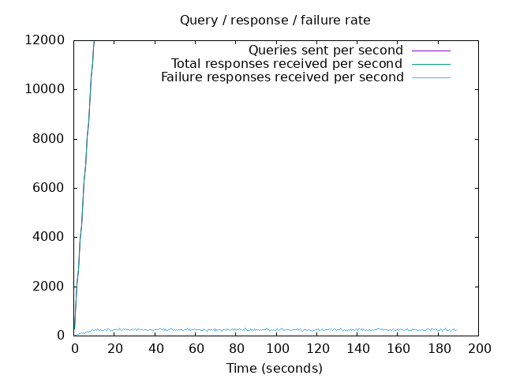
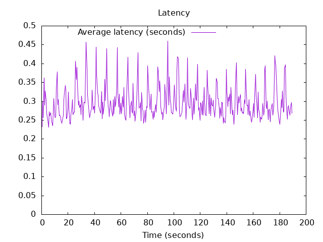

DNS Resolution Performance Testing Tool Version 2.14.0 [Status] Command line: resperf -P 20250620-1240.gnuplot -M dot -s 79.127.218.224 -d domains_shuffled.list -C 500 -m 12000 -b 1400 -q 1000000 -R -r 10 -c 180 -t 30 -F 0 [Status] Sending [Status] Ramp-up done, sending constant traffic [Status] Waiting for more responses [Status] Testing complete Statistics: Queries sent: 2219999 Queries completed: 2219999 Queries lost: 0 Response codes: NOERROR 1497664 (67.46%), SERVFAIL 46521 (2.10%), NXDOMAIN 675814 (30.44%) Run time (s): 201.329810 Maximum throughput: 12000.000000 qps Lost at that point: 0.00% Connection attempts: 574 (561 successful, 97.74%)
 